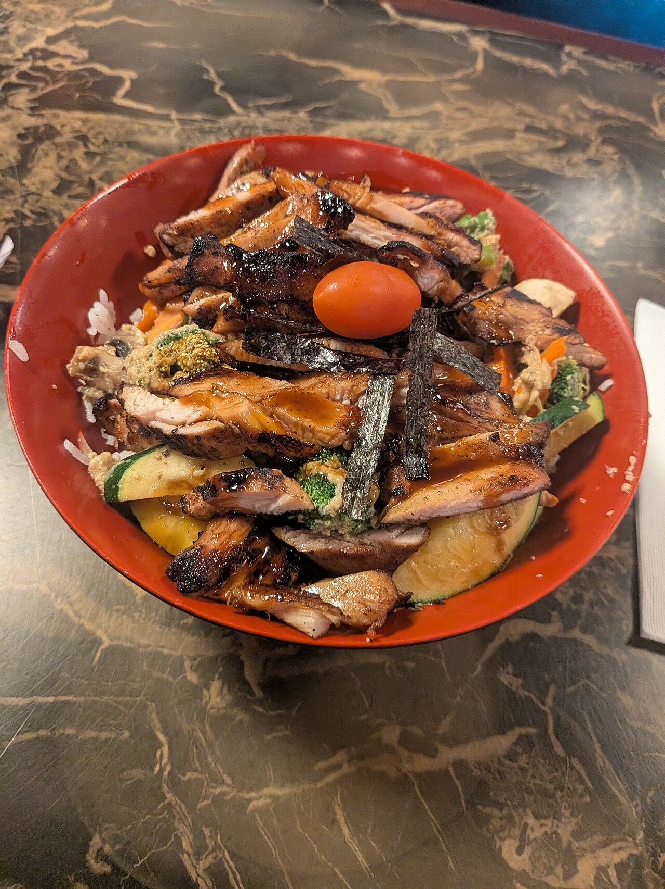
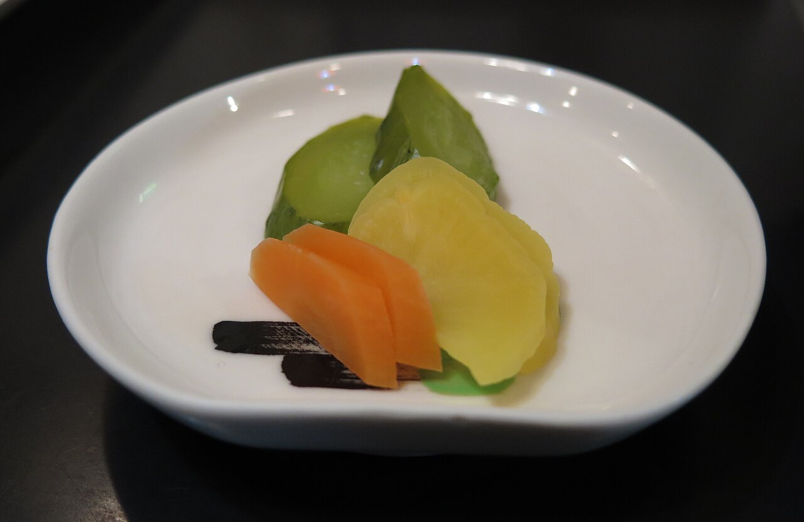
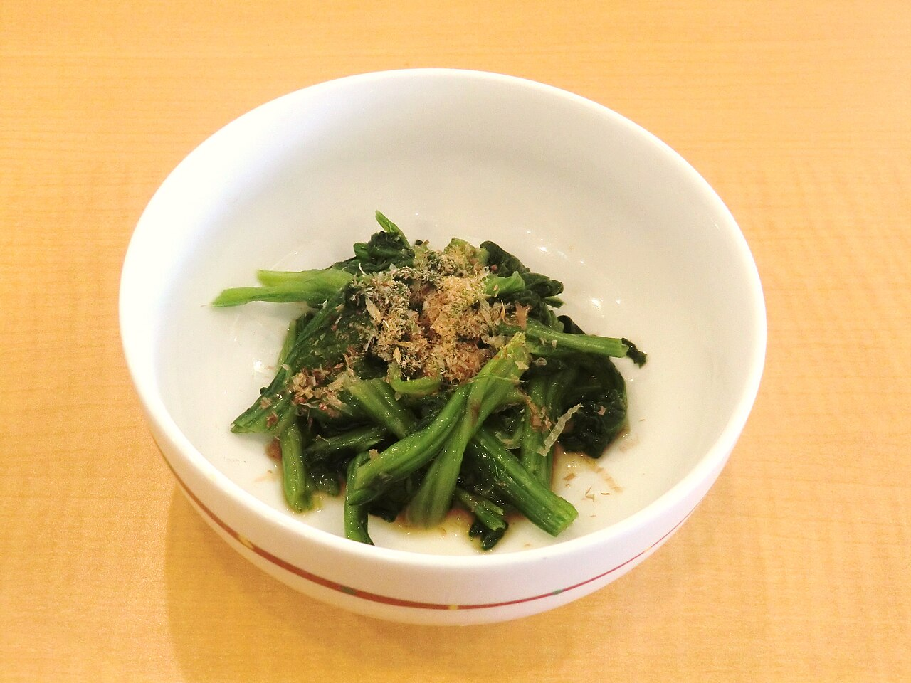
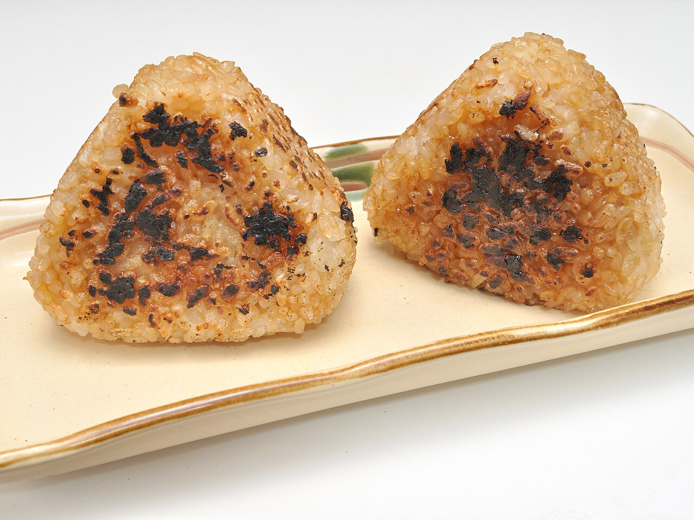
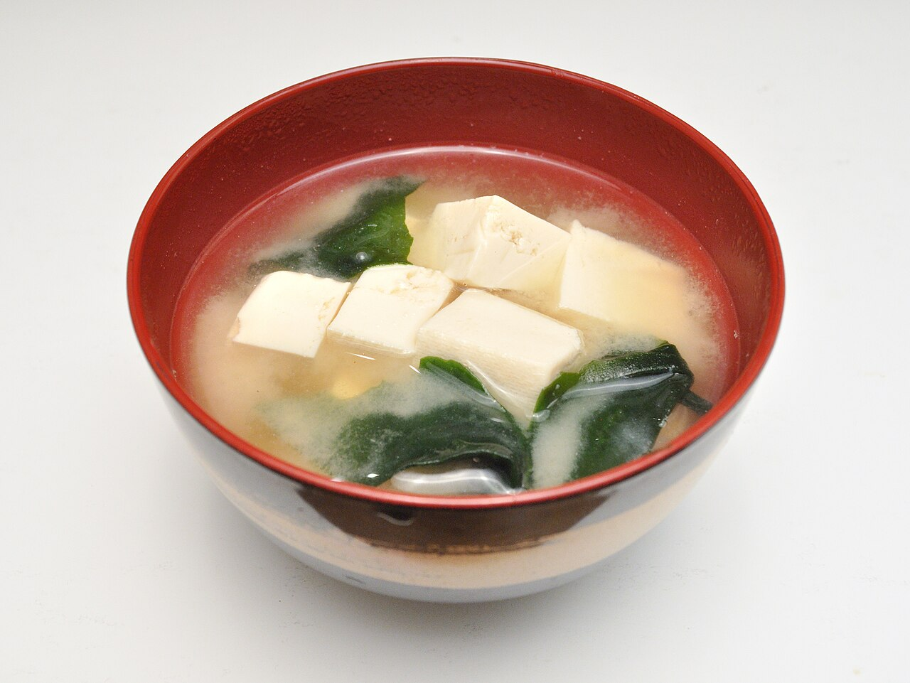

メニューは準備中です
メニュー
ごはんまわりのイメージ写真
下の写真はフリー素材のイメージです。お店の料理ではありません。





掲載写真はフリー素材のイメージで、店舗の実際の様子・料理ではありません。他の地域で撮影されたもの、撮影地が不明なものを含みます。
メニューは準備中です
下の写真はフリー素材のイメージです。お店の料理ではありません。





掲載写真はフリー素材のイメージで、店舗の実際の様子・料理ではありません。他の地域で撮影されたもの、撮影地が不明なものを含みます。